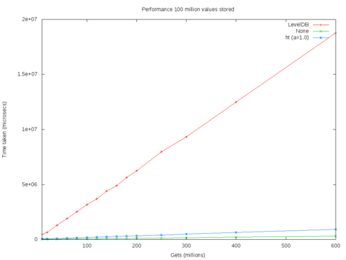

The libbitcoin-database library is a dependency of libbitcoin-blockchain, libbitcoin-node and libbitcoin-server.
Example
#include <string>
#include <bitcoin/database.hpp>
// Create a new mainnet blockchain store.
int main(int argc, char* argv[])
{
std::string prefix("blockchain");
const auto genesis = bc::chain::block::genesis_mainnet();
if (argc > 1)
prefix = argv<span class="createlink"><a href="/ikiwiki.cgi?do=create&page=1&from=Libbitcoin_Database" rel="nofollow">?</a>1</span>;
if (!bc::database::data_base::initialize(prefix, genesis)
return -1;
return 0;
}
Design
The database is built directly on the operating system's memory-mapped file system. Logical queries are performed using a set of hash tables. The number of hash buckets is optimized to minimize hash collisions, though collisions are accommodated. These changes resulted in a substantial performance increase, near constant time, for queries against the blockchain. Insert performance was not materially affected. The database uses sequence locking to avoid writer starvation while never blocking the reader. This is ideal for a high performance blockchain server as reads are significantly more frequent than writes and yet writes must proceed wtihout delay.
 ?Libbitcoin-blockchain-gets-normalised.png
{kind=link}
{kind=link}
Database
The following files constitute the blockchain database non-volatile storage. As of height 350,000 the database consumes approximately 105 GB of disk space.
- blocks_lookup
- blocks_rows
- history_lookup
- history_rows
- spends
- stealth_index
- stealth_rows
- txs
Considerations
- There is no mechanical hard drive optimization. The implementation is intended for solid state drives (SSD).
- There is a possibility of index corruption during hard shutdown. There is no means of detecting corruption aside from catastrophic fault. However given that the entire blockchain is a cache this is not considered significant. Repair can be accomplished by re-synchronizing the blockchain.
- Data files are append only, with logical deletions only. Therefore file size is not minimized following blockchain reorganization although the impact is typically small. Defragmentation can be accomplished by re-synchronizing the blockchain.
- The database is effectively locked during write operations. As these operations are anticipated on a period of approximately ten minutes this is not typically significant. However during a period of catch-up synchronizing the server can become continuously unresponsive to requests.
History
- The original implementation used LevelDB.
- In late 2014 by ?Amir Taaki (genjix) replaced LevelDB with memory-mapped hash table storage and indexing.
- In early 2016 ?Eric Voskuil separated the database from libbitcoin-blockchain into an independent library.